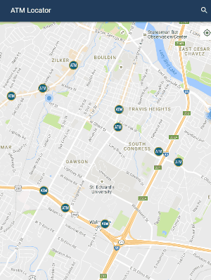

<link rel="import" href="../bower_components/polymer/polymer.html">
<dom-module id="my-projects">
  <template>
    <style>
      :host {
        --app-primary-color: #2196F3;
        --app-secondary-color: black;
      }
      .centeredImg {
        display:block;
        margin-left: auto;
        margin-right: auto;
        box-shadow: 2px 3px  5px -1px;
      }
      p {
        padding-left: 20px;
        padding-right: 20px;
      }
    </style>
<br>
<div style = "padding-left:10px; padding-right:10px">
<h3 align = "center" style = "margin-top:0;">E-learning Platform with Moodle</h3>
<p><b>The Problem: </b> Our instructors (including myself) were teaching our students by handing out PDFs for lessons and quizzing them with another PDF and an Excel to grade their work. Seemed very archaic and having an online solution would be best since we had students in different locations around the world.</p>
<p><b>The Solution: </b> Since we were dealing within a closed network we needed something open source. Moodle was the perfect candidate and rather easy to manipulate. Setting up was rather tedious since we had to ensure extra security measure for the network we were using. I also had to create new plugins for to tailor the teaching to a more aural type learning environment.</p>

<p align = "center"><i>Above is the sample site, not the actual product</i></p>
<p>Languages: PHP, Javascript, HTML, CSS</p>

<p> Link: <a href = "http://cti-testmoodle.rhcloud.com/" target = "_blank"> Sample Moodle Site </a> <br>
<i>The original site is in a classified network, previous link has very little content and not all the plugins available.</i></p>
<hr>
<h3 align = "center">Time Keeping with PKIs</h3>
<hr>
<h3 align = "center" style = "margin-bottom:2px;">ATM Awareness App</h3>
<center><i>Internship Project</i></center>
<p><b>The Problem:</b> Millions of dollars a year are spent on ATM fees by the company and the member. How to show the member the closest free ATM from the ATM they just used to change habits?</b></p>
<p><b>The Solution:</b> Develop an application on Android, iOS, and PWA that easily lets members receive and view notifications when they use an ATM with a fee, and see the nearest free ATM. </b></p>

<br>
<p>Languages: Java, Swift, Javascript, HTML, CSS, Polymer Framework</p>
<p>Database and Notifications: Firebase</p>
<hr>
<h3 align = "center">Course Schedule Generator</h3>
<hr>
<h3 align = "center">Client Database and Doc Creator</h3>
<hr><br><br>
</div>
  </template>

  <script>
    Polymer({

      is: 'my-projects',

      properties: {
        prop1: {
          type: String,
          value: 'my-projects',
        },
      },
    });
  </script>
</dom-module>
